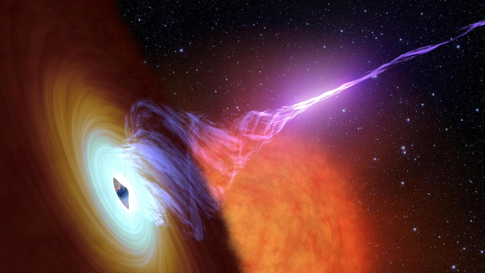
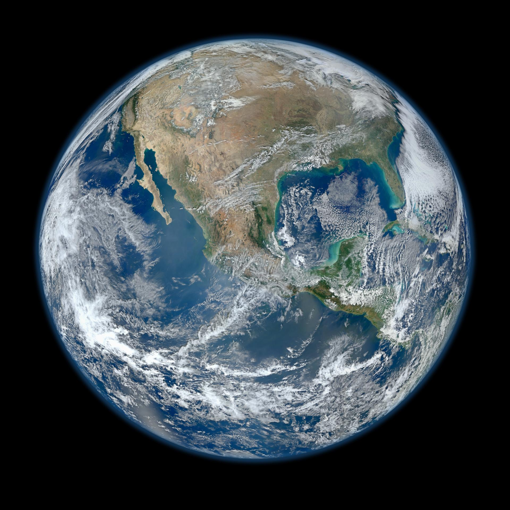
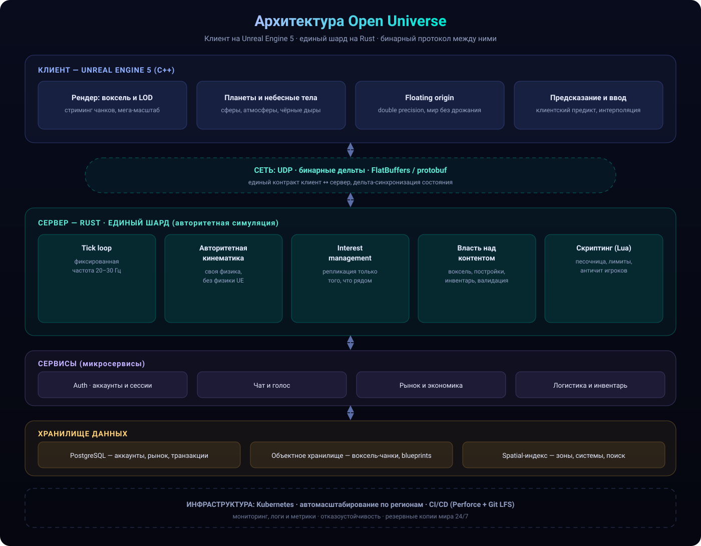
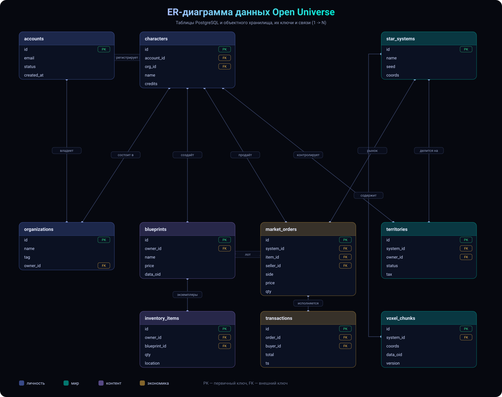
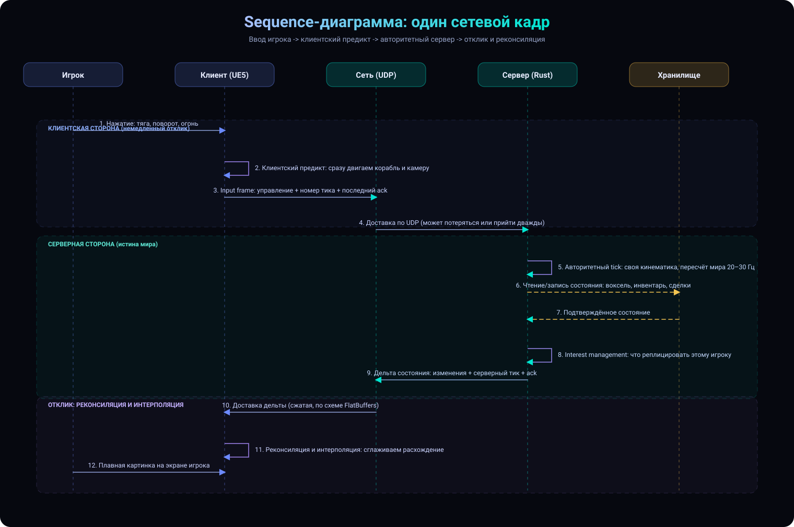

What is Open Universe
A game about freedom in a boundless universe: from mining ore in an asteroid belt to building orbital megacities and fighting for territory.
Single shard
One continuous world for every player. No clone servers — just one living universe.
Voxel without limits
Build anything from voxels: from a hand drill to entire cities and battle fleets.
Player economy
Resources, production and the market are shaped by players. Prices are born in the order book.
Programmable
Built-in scripting for autopilots, turrets and logistics. Your constructions are your code.
Territory and war
Capture and hold zones, fight orbital and planetary battles.
Persistence
The world runs 24/7. Everything built is saved — your story stays in space.
Space
Concept art for the project: nebulae, black holes, asteroid belts and habitable planets.



Image credits: NASA / JPL-Caltech / STScI / ESA — public domain material.
Technology and engine choice
The project's key architecture decision (ADR-0001): a client on Unreal Engine 5 (C++) and a single shard on a custom Rust server. For an MMO the engine is mostly client rendering and tools; server simulation is hand-written anyway.
Client — Unreal Engine 5
C++, source access, graphics, World Partition and Iris. Voxel, planets and floating origin are a custom module.
Server — Rust
Authoritative single-shard simulation, predictable performance and async networking. Not locked inside the engine.
Protocol
UDP + binary deltas with FlatBuffers/protobuf schemas — one contract shared by client and server.
| Criteria (weight) | Unreal Engine 5 | Unity 6 + DOTS | Godot 4 | Custom C++/Rust | Unigine |
|---|---|---|---|---|---|
| Voxel / planetary scale (25%) | 4 | 5 | 2 | 5 | 4 |
| Networking / MMO replication (20%) | 4 | 3 | 2 | 5 | 4 |
| Rendering and graphics (15%) | 5 | 4 | 3 | 4 | 5 |
| Tools and editor (15%) | 5 | 4 | 3 | 1 | 3 |
| Hiring / ecosystem (10%) | 5 | 5 | 3 | 1 | 2 |
| Time to first playable (10%) | 4 | 5 | 5 | 1 | 4 |
| Cost / license (5%) | 4 | 4 | 5 | 5 | 2 |
| Total (weighted) | 4.45 | 4.30 | 2.95 | 3.55 | 3.90 |
Scores are an expert fit rating (0–5), not a benchmark. Full rationale and risks — in docs/adr-0001-engine.md.
System architecture
How the project is built: system layers, the data model and the life cycle of a single network frame. Switch tabs.

Arrows show data flow; the solid line between client and server is the binary network protocol. To explore by layer, open the interactive tab.
Hover a layer to highlight it, and click to expand its components and description.

Tables are grouped by meaning: identity, world, content, economy. Relations are 1 → N by foreign keys (FK).
Click any table — only its relations are highlighted. Clicking a table in the list also opens its card and highlights relations.

Full cycle: input → client prediction → authoritative server → state delta → reconciliation and interpolation.
Frame flow
Input → client prediction → delta sent → authoritative server tick → reconciliation and interpolation on the client. This is what keeps the world fair.
Separation of concerns
The client handles rendering and responsiveness; the server owns the truth: movement, voxel, inventory, economy and validation.
Scaling
The world is split by star systems and zones; a spatial index and interest management keep thousands of players online under control.
Persistence
Transactional data in PostgreSQL, heavy voxel chunks and blueprints in object storage. Everything players build is saved.
Trust
Player scripting runs sandboxed with limits, and the server re-validates every action — the basis of anti-cheat.
Infrastructure
Kubernetes, autoscaling by region, monitoring and backups. The world runs 24/7 without downtime.
Code: server core
The single-shard core is already written in Rust and works: deterministic simulation, binary protocol, tick loop and interest management. It builds and is covered by tests.
Determinism
Custom trigonometry, custom PRNG and a fixed 30 Hz step: server and client compute the world bit-for-bit identically. Verified by checksum.
World generation
Star systems, planets, moons and asteroid belts are generated from a seed — reproducible. Black holes are rare.
UDP and deltas
Real UDP transport with a session token and batching. Only changed entities in view travel over the network.
Spatial index
A uniform grid: interest management visits only nearby cells, not the whole world. Verified against brute force.
Interest management
A client sees only what is nearby. Radius is 2000 units, index cell size is 1000 units.
Netcode
Client prediction and reconciliation: divergence from the server is fixed by replaying unacknowledged frames.
| Metric | Value |
|---|---|
| Core tests | 223 passed |
| Crates (modules) | 13 (protocol, sim, spatial, net, shard, persist, economy, combat, render, script, build, server, client) |
| Simulation tick rate | 30 Hz (149 ticks per 5 s — verified) |
| Persistence | world and economy survive a restart |
| Market | order book, spread, VWAP, price/time priority |
| Production | 7-step chain: ore → ship |
| Combat | shields, armor, damage types, territories and taxes |
| Wire position precision | 0.1 mm (i32, ±214 km) |
| Snapshot compression | varint + zigzag (small numbers — 1–3 bytes) |
| Empty delta + ack (out of view) | 29 bytes |
| Real UDP: traffic per player | ≈ 202 bytes/tick |
| Zone distribution across 4 nodes | 21.8–28.2% (even) |
| Client interpolation buffer | 2 ticks (≈66 ms) of delay |
$ cargo test --workspace → 223 passed (13 crates)
$ cargo run -p ou-combat --bin ou-combat-demo
=== Hit chance (1000 shots) ===
autocannon range 1500: 97% 80% 62% 44% 31%
=== Duel: laser vs railgun ===
tick 8: shield 164 ( 54%), armor 308 ( 77%)
tick 27: shield 0 ( 0%), armor 0 ( 0%) ← destroyed
Winner by damage: player 2 (railgun)
$ cargo run -p ou-economy --bin ou-market-demo
trade: seller 2 → buyer 9, 60 units at 25 (total 1500)
VWAP = 26 · Trades in the log: 2Sources: server/crates/{protocol,sim,server,client} · docs — server/README.md.
Development plan
The full plan from concept to live-ops. Click a phase to expand its tasks. Statuses update live from data.js/plan.json.
Progress
Overall completion is computed automatically across all plan tasks.
Roadmap
A short timeline of the phases. The heading with status updates as work progresses.